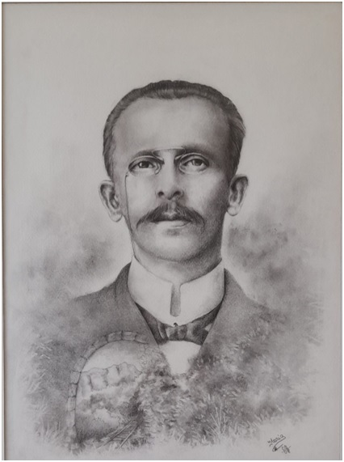
Nasceu no dia 02 de dezembro de 1860, filho de Bento Gonsalves e Matilde Gonsalves Cordeiro. Passou sua infância na casa grande do engenho de cana, no Sítio do Campo. Foi aluno dos eminentes professores José Gonçalves de Moraes e Miguel Schleder, na estrada da América, onde se destacava pelo seu exemplar comportamento e notável aproveitamento.Desde cedo revelou-se um apaixonado pela política, pois seu pai e seu avô eram eminentes chefes políticos. Assim seu caráter foi moldado no exemplo, absorvendo todos os ensinamentos que lhes foram ministrados, tornando-se um homem esclarecido.
Participava ativamente de todas as atividades sociais e literárias. Desempenhou com destaque e raro brilho diversas funções políticas e particulares, sobretudo sempre pelas suas iniciativas e realizações ilibada honestidade. Tinha acendrado amor a sua terra.
Como homem público e político fazia questão de comemorar as datas cívicas com toda pompa e brilhantismo. Prezava sobretudo sua honestidade e dignidade humana e primava por suas ideias liberalizantes e progressistas. Apoiou o movimento liberal de Getúlio Vargas e sua vitoriosa revolução de 1930.
Faleceu no dia 03 de março de 1934, em sua residência à Rua Fernando Amaro, rodeado de seus filhos, parentes e amigos. Ao falecer teve afinal a realização do seu maior ardente desejo: “O de ser sepultado no seu torrão natal, o plácido campo santo de sua terra”, onde repousa para todo o sempre, no chão que tanto amou e serviu, porem vivo e venerado na lembrança de todos.
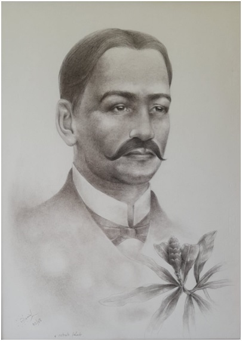
Nasceu em Portugal. Ainda muito jovem veio para o Brasil, vindo a radicar-se em Morretes.
Durante muitos anos trabalhou prosperamente no comércio de sua propriedade. Era casado com Joana do Nascimento Grillo com quem teve um filho Manoel Francisco Grillo Junior.
Foi indicado pelo Governo para assumir o cargo de Prefeito no ano de 1904 até 1908. Desempenhou uma administração com muito esforço, vencendo os obstáculos da época, a rivalidade que havia entre o Partido Conservador ou Picapau e os Maragatos. Enfrentou com coragem e dignidade as dificuldades surgidas no início do século XX.
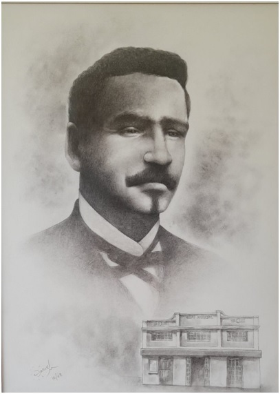
Nasceu em 28 de novembro de 1849, de origem modesta, Rômulo José fez-se pelo seu próprio esforço e inteligência, galgando um a um os degraus do progresso, quer no comércio, na indústria e na vida pública.Teve o seu primeiro emprego na firma de: Antônio Ricardo dos Santos, que por volta de 1965 era o maior comerciante, dono de engenho e exportador de erva mate. Anos depois, quando já era pessoa de confiança da casa, passou a trabalhar por conta própria, em virtude de mudança do seu chefe e amigo, (Antônio Ricardo dos Santos), para o planalto.
Dos seus contatos com políticos prestigiosos estaduais, de um lado Generoso Marques, seu correligionário, d’outro Vicente Machado, do partido Conservador ou “Picapau”, resultou a primeira eleição para o cargo de Prefeito Municipal de Morretes, em 1908.
Na esfera estadual, cresceu o seu conceito até que mereceu a honra de ser eleito para Deputado Estadual, assumindo a elevada função legislativa de 1914 à 1917, ficando em seu lugar AngeloPilotto.
Esplêndido administrador, homem justo e respeitado, reassumiu a prefeitura em 1917, por ocasião da morte de AngeloPilotto, permanecendo no cargo até 19 de julho de 1925, quando veio a falecer.
O centenário do seu nascimento, ocorrido em 28 de novembro de 1949, foi dignamente comemorado, nesta cidade, tendo o orador oficial feito um apelo às autoridades e ao povo no sentido de ser a memória do grande Morretense perpetuada em bronze, erguendo-se em praça pública um busto para servir de exemplo as geraçõesfuturas.
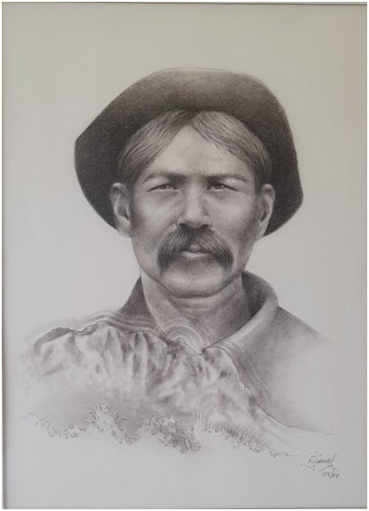
AngeloPilotto, nasceu na Itália em 1852. Veio para o Brasil em 1877, como funcionário da empresa de SavinoTripotti, que contratou com o Governo Imperial a imigração de italianos para todo o sul do Brasil. Com 25 anos, chegou ao Brasil, vindo a radicar-se no Porto de Cima.Cidadão probo, devotado ao trabalho, no qual era coadjuvado pela sua maravilhosa esposa Marieta, prosperou rapidamente, destacando-se na comunidade, tornando-se líder do lugar e ocupando cargos relevantes na municipalidade, como o de Prefeito.
Sua residência (e casa comercial), estava situada na praça principal da localidade, ponto obrigatório de parada de viandantes de serra acima pela estrada da Graciosa. A todos, ele hospedava com generosidade e fidalguia. Assim, em 1° de setembro de 1885, foi-lhe concedido o título de cidadão brasileiro de acordo com a Lei n/ 3140 de 30 de outubro de 1882, para que pudesse usufruir das regalias e direitos como se fosse brasileiro nato.
Tão marcante era a liderança de Pilotto que, durante a Revolução Federativa de 1894, foi nomeado para, em comissão com outros cidadãos de Porto de Cima, e conforme determinação do Governo Provisório do estado, angariar donativos em dinheiro na sua localidade, à guisa de “Imposto de Guerra”!
A Sociedade de Excursionistas do Marumbi de Curitiba, descobriu uma placa fixada, naquela época, no topo do monte, por esse pioneiro, pelo que lhe foram prestadas merecidas homenagens. Em 1914 foi nomeado Prefeito foi nomeado Prefeito Municipal em substituição ao Coronel Rômulo José Pereira, cargo que ocupou até 1917, quando veio a falecer.
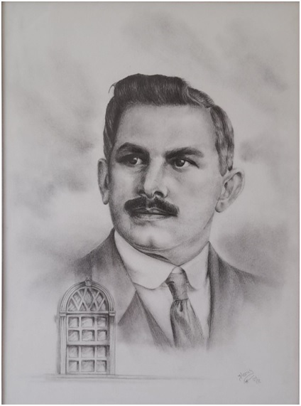
Luiz Brambilla, nasceu no dia 28 de julho de 1879, em Antonina. Seus pais Pedro Brambilla e sua mãe Ângela Brambilla vieram da Itália numa das primeiras levas de imigrantes.Logo após seu nascimento a família mudou-se para Morretes, onde cresceu, estudou e trabalhou na pequena cidade ao Porto de Barreiros.
Em 1925 com o falecimento do Prefeito de Morretes Coronel Rômulo José Pereira, Luiz Brambilla, então Presidente da Câmara Municipal, assume a Prefeitura. Após completar o quatriênio daquela gestão, é eleito Prefeito efetivo e continua à frente do poderes público municipais até ser destituído por ocasião da Revolução de 1930.
Foi sócio-fundador da “Sociedade Beneficente e Recreativa dos Operários” e Presidente do “Tiro de Guerra 70”.
Como Prefeito realizou grandes benfeitorias no município, dentre as quais se destaca a construção da estrada que liga a cidade ao porto de Barreiros.
Foi sócio-fundador da "Sociedade Beneficente e Recreativa do Operários" e Presidente do "Tiro de Guerra 70".
Em decorrência da sua situação eficiente e honesta à frente dos negócios públicos a Câmara de Vereadores de Morretes aprovou e o ilustre Prefeito Dr. Sidney Antunes de Oliveira sancionou o projeto de Lei que dá o nome de Luiz Brambilla a uma das ruas da cidade, na aprazível Vila Santo Antônio.
Luiz Brambilla faleceu a 19 de janeiro de 1952, cercado do carinho da sua família e do povo de Morretes.
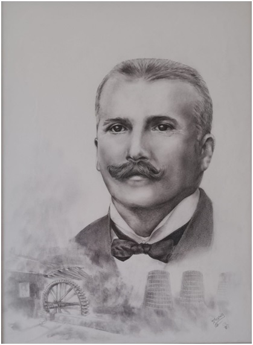
Prefeito de 1930 – 1932. Adquiriu um terreno na rua XV de Novembro, onde construiu o prédio do novo Cine Teatro, após o incêndio do prédio do Cinema no Largo da Parada em 15 de outubro de 1930. Concluído em 1932, o Cine teatro, passou a receber Companhias Teatrais do mais alto gabarito.Homem íntegro e honesto, sempre atendendo os anseios do povo, administrou o município com seriedade e responsabilidade, sempre buscando recursos junto ao Governo Estadual.
Luiz Brambilla faleceu a 19 de janeiro de 1952, cercado do carinho da sua família e do povo de Morretes.
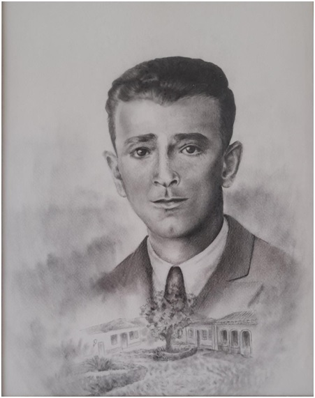
Pacifico Frederico Zattar, nasceu na cidade de Morretes, em 25 de julho de 1896, filho de Elias Pacifico Zattar e de Dona Emma Frederico Zattar. Iniciou o curso primário em Morretes, continuou em Ponta Grossa e terminou em Paranaguá. Foi telegrafista da Rede Viação Paraná- Santa Catarina.Com a declaração de guerra contra a Alemanha (Primeira Guerra Mundial), assentou praça no exército como voluntário, em 12 de dezembro de 1917, tendo permanecido até 26 de setembro de 1926.
Foi instrutor dos tiros de guerra n°19 de Curitiba e n°70 de Morretes.
Pelo decreto n° 2129 de 29 de agosto de 1932, foi nomeado Prefeito Municipal de Morretes, tendo sido no ano seguinte, eleito para novo mandato. Pelo decreto n°5940 de 7 de setembro de 1937, foi mantido no cargo, permanecendo como prefeito de Morretes até 10 de novembro de 1938, quando pediu demissão.
Na sua administração foram procedidos os estudos para a instalação de água e esgoto com o respectivo orçamento: a planta cadastral da cidade, do quadro urbano e suburbano; a colocação de meio fio na totalidade das ruas e aterros necessários. No cemitério municipal Santa Esperança foram construídos túmulos para alugar; ofertou ao grupo escolar “Miguel Schleder”, um piano Essenfelder.
Convidado pelo presidente dos festejos do Sesquicentenário da Independência e da Comissão de Desportos do Exército, compareceu ao Ginásio Marcos Márcio Cunha, no Clube Militar, no Rio de Janeiro, recebendo as homenagens programadas e os cumprimentos das mais altas autoridades das Forças Armadas.
Faleceu no dia 09 de julho de 1980.
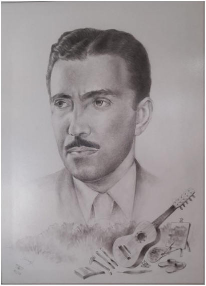
Nasceu em Curitiba, no dia 24 de agosto de 1909. Filho de Lysimaco Ferreira da Costa e Ester Ferreira da Costa.Iniciou sua carreira na magistratura em 06 de agosto de 1940, quando foi nomeado Juiz de Direito, substituto na Comarca de Morretes. Exerceu o cargo de Prefeito Municipal nesta cidade, de 1938 à 1940. Foram 3 anos de excelente administração.
Casado com Maria Macedo da Costa, com quem teve 3 filhos:
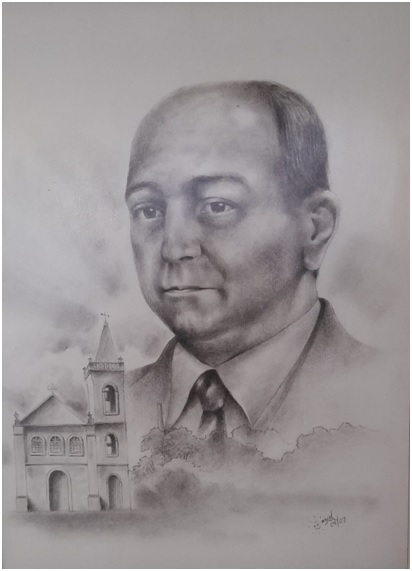
Aguilar Gonsalves de Moraes, filho de José Gonsalves de Moraes e Carmela do Nascimento Moraes, nasceu em Morretes em 27 de abril de 1891 e faleceu na mesma cidade em 09 de março de 1949.Exerceu por mais de 33 anos o cargo de Secretário e Contador da Prefeitura Municipal de Morretes. Em 28 de junho de 1940 foi nomeado para exercer, em comissão, o cargo de Prefeito Municipal de Morretes, que desempenhou por quatro anos. Durante sua gestão como prefeito foi implantada em Morretes a rede de água e esgoto. Tal conquista deu-lhe grande alegria, pois representou, além dos benefícios óbvios de higiene e modernidade, a erradicação definitiva do tifo, doença grave que na época ainda sem medicação conhecida, era uma ameaça constante à vida da população de Morretes.
Democrata e idealista, preocupado ao máximo com o progresso de sua terra natal e o bem-estar do seu povo, dedicou toda a sua existência à procura de soluções para os problemas e dificuldades de Morretes, tendo participado ativamente de campanhas cívicas, políticas, culturais ou esportivas que foram desenvolvidas no seu tempo.
Sentindo a necessidade da cidade crescer para outra margem do Rio Nhundiaquara, organizou a planta e o plano de venda em lotes de propriedade de sua sogra, onde hoje existe a Vila Santo Antônio.
Bom amigo, bom filho, bom esposo e bom pai, morreu pobre de bens materiais, legando aos seus o nome honrado, a saudade e a lembrança de sua sensibilidade e de seu generoso coração.
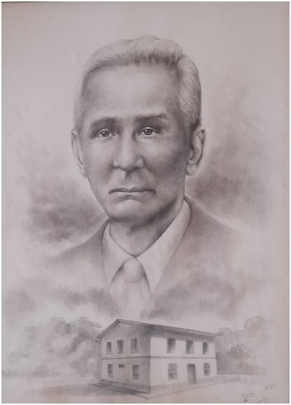
Nasceu na cidade de Morretes em 26 de julho de 1880, filho de Carlo(s) (Bergamaschi) Trombini e Cecilia Maria (Ravani) Bavetti, ambos italianos, que vieram da Itália em 24 de abril de 1887. Não teve a escolaridade necessária, adquirido na maioria das cidades do interior, frequentou por quatorze dias a Escola Pública, estabelecida naquela época na Praça Zacarias em Curitiba.Contraiu núpcias com Angelina Buzatti, de cujo matrimonio teve sete filhos: Luiza, Edilberto, Carlos, Sinibaldo, Geraldo, Alcides, Mirtilo e Odete, sendo o segundo e o quinto falecidos.
Voltado à política, candidatou-se a curul-prefeitural, não sendo bem sucedido.
Convidado pelo interventor Manoel Ribas para assumir a Prefeitura Municipal de Morretes, sucedeu a Aguilar de Moraes no período de 1944 a 1945.
Antes de assumir a Prefeitura de Morretes em face as arruaças acontecidas com os simpatizantes do “eixo” (guerra 1939/45) foi encarregado de manter a ordem a todo custo, o que fez a maior contento.
Com o falecimento trágico do então Presidente Getúlio Dornelles Vargas e consequentemente renúncia do interventor Manoel Ribas, apresentou também o seu pedido de demissão, continuando porem sempre a lutar pela causa democrática na direção do Partido Social Democrático.
Olympio Trombini faleceu no dia 17 de agosto de 1958, aos 78 anos de idade.
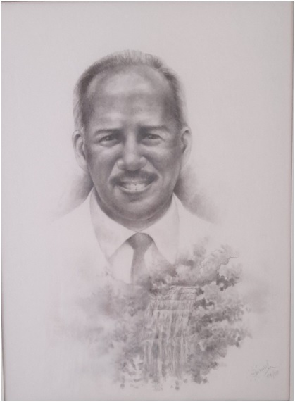
Administrou o município de Morretes no período de outubro a novembro de 1933 e nos anos de 1945 e 1946. Prefeito amigo, benquisto por todos, recebia cordialmente a todos que o procuravam.Era médico pediatra: atendia no posto de Puericultura todas as crianças com muito carinho.
Foi presidente da LBA (Legião Brasileira de Assistência), que dava atendimento as gestantes, fornecia o leite para as crianças semanalmente e promovia cursos de tricot, crochê, corte e costura para as futuras mamães confeccionar o enxoval do bebê.
Após 20 anos de serviços prestados à comunidade morretense, mudou-se para Curitiba, vindo a falecer anos mais tarde. Deixou marcas positivas em nosso município.
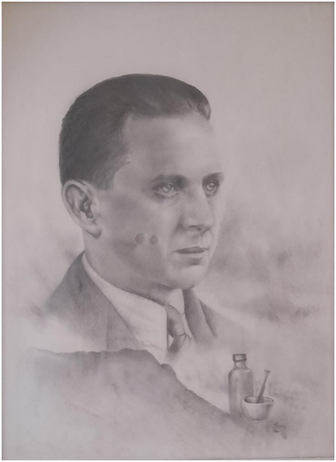
De nacionalidade alemã, veio para Morretes onde fixou residência.Era casado com D. AlieteDall’Stela com quem teve uma filha. Era farmacêutico de renome, dando atendimento não só ao povo de Morretes como também a todo o litoral.
Foi nomeado prefeito de Morretes para o biênio 1946/1947, cargo que exerceu com muita dedicação e responsabilidade. Na sua gestão recebeu a visita do Governador Moisés Lupion, que atendia prontamente as suas reivindicações.
Benquisto e respeitado pelo clero e pela sociedade morretense em geral, se fazia presente em todas as festividades cívicas, religiosas e culturais.
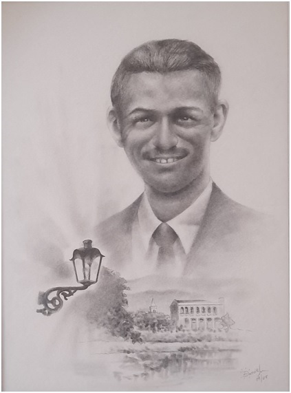
Antônio José Gonçalves Filho nasceu em 1910. Seu Tone como a população de Morretes o conhecia, era um cidadão muito voltado para as suas causas sociais que envolviam na qualidade de vida da comunidade.Exerceu as funções de guarda-livros em várias empresas de Morretes, trabalhou por um tempo na Usina Morretes da família Malucelli.
Administrou a construção do Hospital e Maternidade de Morretes, contratando mão de obra e adquirindo materiais de construção, além de buscar verbas federais para poder fazer frente aos gastos com a obra. Fundou o Asilo a Velhice Desamparada de Morretes e o Retiro Fraterno de Meninos.
Foi presidente da União Espírita de 1947 até 1969, exerceu o cargo de serventuário da justiça, no cargo de contador, partidor, avaliador e depositário público, onde se aposentou. Antônio Gonçalves filho foi durante toda a sua vida um exemplo de seriedade e honestidade no trato das coisas públicas, um idealista com vocação humanitária. Contabilista, professor, foi fundador da escola de Comercio.
Exerceu o cargo de prefeito municipal no período de agosto a outubro de 1947, no lugar de EuricoSchlenn.
Faleceu em 06 de junho de 1969, aos 59 anos de idade.
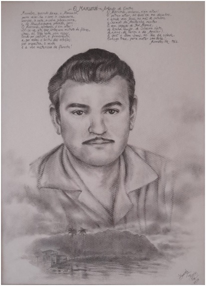
Nasceu em Muzambinho, estado de Minas Gerais, no dia 21 de novembro de 1918, filho de Francisco Bugalho de Castro e AmbrozinaPancreto de Castro.Quando rapaz seguiu para São Paulo cursando jornalismo, adquirindo carta branca para escrever importantes jornais do país. Foi assíduo frequentador de concertos de música clássica no Teatro Municipal do Rio de Janeiro.
Casou-se naquela cidade aos 28 anos de idade no Mosteiro de São bento com Aracy Paulo de Souza, com a qual teve três filhos: Irene, Arlindo e Paulo.
Como gerente da fábrica de Papel de São Marcos, veio se estabelecer em Morretes, a princípio por cinco anos, mas acabou cativando-se pelo lugar que o elegeu prefeito com 29 anis de idade, com apenas um ano de estadia nesta cidade.
Foi depois vereador por diversas legislaturas ocupando a Presidência da Câmara.
Como prefeito, foi quem calçou as novas primeiras ruas, tirou Morretes da dependência do Poder Judiciário de Antonina, elevando-a a Comarca, criou conjuntamente com o Padre Camargo o Ginásio Municipal Rocha Pombo, hoje Colégio Estadual Rocha Pombo. Modernizou o serviço de utilidade pública, comprando nossos primeiros caminhões em substituição as carroças que até então realizavam o serviço de limpeza da cidade.
Na Conferência dos prefeitos em Curitiba foi escolhido devido a sua eloquência, orador oficial em nome dos prefeitos presentes ao conclave. Recusou algumas vezes de receber o honorário como prefeito para melhorar a situação econômica da prefeitura deixando algumas obras e ainda algum dinheiro aos cofres públicos.
Faleceu em Morretes de enfarte cardíaco aos 48 anos de idades em 26 de abriu de 1967.
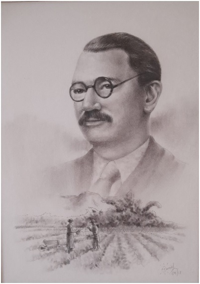
Nasceu em 03 de outubro de 1889; filho de Damaso Correa Lima e Maria Dalgolo.Casado em segunda núpcias com Alice do Nascimento, com quem teve cinco filhos: Henrique, Saul, Lara, Uriburu e Soraya.
Em 1917 começou a trabalhar na Rede Ferroviária como chefe de trem, cargo que exerceu até a sua aposentadoria.
Assumiu durante anos a liderança do Partido Trabalhista Brasileiro, que o elegeu prefeito de Morretes em 1951, permanecendo no cargo até 1955, com muita responsabilidade e seriedade, buscando sempre o melhor para o município.
Homem simples, do povo, conquistou a confiança de seus munícipes. Com o apoio do Governo Estadual, conseguiu grandes realizações para Morretes.
Faleceu em 26de março de 1959.
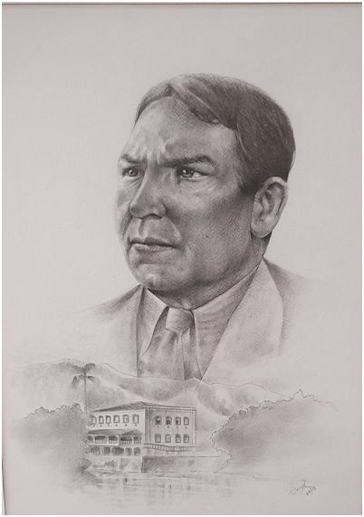
Cesar Alpendre nasceu em 27 de dezembro de 1885, na aldeia da Arrifana, subúrbio da cidade da Guarda, em Portugal. Filho de Francisco Pedro Alpendre e de sua mulher Maria da Glória Alpendre.Em 1912, aconselhado por seus pais imigrou para o Brasil.
Em outubro de 1913 começou a trabalhar para a prefeitura de Curitiba como assentador de meio-fio na avenida Graciosa. Em 1914 veio para Morretes.
Residiu em Porto de Cima por aproximadamente dois anos, resolveu voltar para a terra natal, para visitar os pais e apresentar-lhes a esposa e o filho. Embarcou para Portugal no dia 21 de março de 1924 e permaneceu lá durante seis meses, convivendo com a família e amigos em clima de festa.
De volta ao Brasil, passou a ser fornecedor de lenha para as locomotivas da Estrada de Ferro Paraná – Santa Catarina durante três anos.
Devido ao seu carisma pessoal, conhecido do município, passou a ser o porta-voz dos políticos locais com as instâncias superiores no âmbito do Estado. Em função disso, foi eleito vereador pela cidade de Morretes através do Partido Trabalhista Brasileiro – PTB, passando a ser presidente da Câmara Municipal. Municipal. Durante o seu mandato de 1951 a 1954 não poupou esforços no sentido de trazer para o município atendimento às necessidades da região em benefício do em comum.
Em 1955 foi eleito prefeito pelo próprio PTB. Durante o seu governo, promoveu um grande evento comemorativo aos 100 anos do nascimento do ilustre morretense Rocha Pombo.
Homem de princípios íntegros, honestos, sempre pautou sua conduta pela justiça e pela verdade. Possuidor de um caráter nobre, sempre cultivou a gratidão, não esquecendo as pessoas que o ajudaram em cada etapa de sua vida, desde que aqui chegou como um simples imigrante, até os momentos de maior glória.
Faleceu em Morretes em 18 de março de 1967, aos 82 anos.
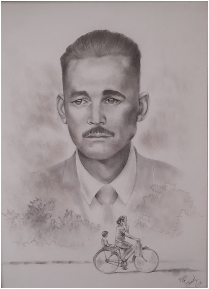
Filho de Lucília Pereira, nasceu em Morretes no dia 13 de abril de 1920.Estudou na escola Miguel Schleder, ainda muito jovem, iniciou no ramo do comércio.
Serviu o exército, onde permaneceu até ser reformado no Posto de Sargento.
Durante muitos anos gerenciou o bar da Estação Ferroviária, que seria cafezinho e lanches, não só aos passageiros que vinham de Curitiba e Paranaguá nos horários de trem, como também atendia a população local.
Eleito prefeito municipal, administrou o município com muita responsabilidade de 1959 a 1963.
Faleceu em 05 de setembro de 1975.
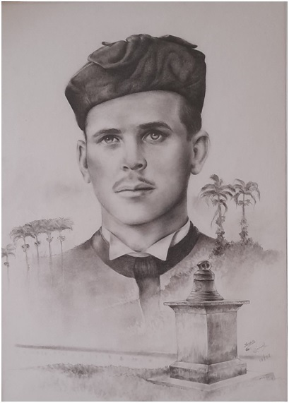
Nasceu em 10 de dezembro de 1927 em Siqueira Campos – Paraná. Filho de Benedito Antunes de Oliveira e Madalena Malucelli Antunes de Oliveira.Advogado, pedagogo, professor e fundador do Colégio Comercial Professor Antônio Gonçalves Filho.
Foi promotor público interino na Comarca de Morretes em 1957, exerceu o cargo de vereador de 1957 a 1960.
Eleito prefeito, assumiu a prefeitura no ano de 1963 até 1968; concorreu e novamente foi eleito exercendo o cargo nos anos de 1973 a 1976, períodos de grandes realizações, pois muito fez pela municipalidade. Prefeito amigo, sempre atendia a todos em qualquer lugar.
Ocupou cargos importantes na sociedade morretense, participando em todos os segmentos sócio-econômico-cultural.
No ano de 2004, foi eleito pelo povo vice-prefeito de Morretes.
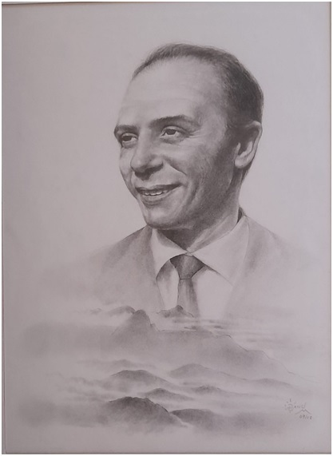
Nascido em São José dos Pinhais em 1923 no dia 25 de abriel, filho de Thomaz João Bortolin e Arlinda Zaniolo Bortolin.Casado com Marise Bortolin, possui um filho, Thomaz João Bortolin.
Formado em medicina pela Universidade Federal do Paraná, iniciou suas atividades médicas no Instituto de Medicina e Cirurgia do Paraná, sendo logo após convidado para colocar em funcionamento o Hospital e Maternidade de Morretes, aqui chegando no dia 17 de abril de 1950.
Durante sua gestão por quase 27 anos, sua atividade foi marcada pela dedicação profissional a todos que o procuravam, sem distinção de classes. Humanitário, médico das famílias, foi o primeiro cirurgião de Morretes.
Em 25 de abril de 1961, recebeu o título de cidadão Honorário de Morretes.
Foi vereador por duas legislaturas e presidente da Câmara de Vereadores por oito anos consecutivos e autor da Lei Municipal que tornou o Hospital e Maternidade de Morretes, órgão de utilidade pública. Elaborou também o regimento interno da Câmara Municipal de Morretes.
Em 03 de outubro de 1968 foi eleito prefeito de Morretes, tomando posse em 31 de janeiro de 1969. Na sua administração englobou objetivos prioritários, onde atualizou o código tributário, instituiu o concurso público e conseguiu convênio com o DNOS para a drenagem do Rio Nhundiaquara. Instituiu também o Brasão de Armas e a Bandeira do Município.
Em 26 de janeiro de 1971, teve a honra de recepcionar o Presidente da República General Emílio Garrastazu Médici. Na ocasião entregou ao presidente uma tela de autoria do artista Theodoro De Bona.
Em 1996 recebeu a Comenda Lírio do Nhundiaquara, conferido pela prefeitura de Morretes, por seus serviços prestados à comunidade.
Faleceu em 22 de maio de 2005.
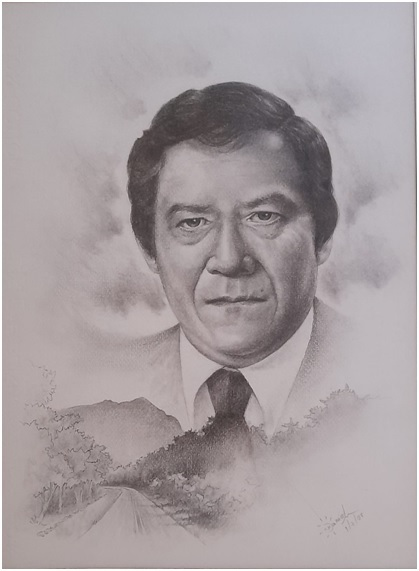
Marcy Alves Pinto nasceu em Morretes na localidade de Porto de Cima, no dia 29 de janeiro de 1935. Filho de Paulo Alves Pinto e Genoepha Alves Pinto.Estudou na escola da localidade sendo aluno da Profª Benedita da Silva Vieira, dona Coluta. Em 1991, a pedido do Sr. Marcy, o prefeito Sebastião Cavagnolli denomina a escola.
Após o falecimento de seu pai em janeiro de 1956, o jovem Marcy passou a ser arrimo da família.
Trabalhou na Escola Municipal Maria Montessori como inspetor de alunos, onde também concluiu o curso ginasial.
Em 1974, a convite do presidente do MDB de Morretes a se candidatar a prefeito da cidade, motivo pelo qual transferiu sua residência para o município, onde concorreu ao cargo de prefeito, saindo vitorioso. Em 1° de janeiro de 1977 assumiu a prefeitura, onde permaneceu até 31 de dezembro de 1982.
Em 2001, a convite do prefeito Helder Teófilo dos Santos, assumiu o Cargo de secretário de Assuntos Especiais, cargo esta que assumiu até dezembro de 2004.
Em sua homenagem, a quadra do ginásio de esportes do Porto de Cima e a Casa Lar localizada na reta do Porto de Cima, levam o seu nome.
Faleceu em 30 de abril de 2005.
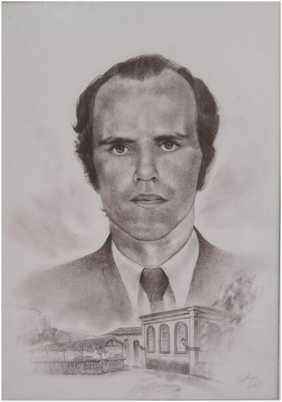
Nasceu em 07 de abriu de 1944, casado com Leni Pazinatto Conforto, é filho de Osvaldo Conforto e Luiza Comunello Conforto.Bacharelado em ciências contábeis, possui vários cursos dentro de sua área de atuação.
Com muita experiência profissional como contador, secretário municipal e professor, participou de vários congressos e seminários.
Eleito prefeito de Morretes, ocupou o cargo de 1983 até 1988, administrando o município com muita responsabilidade.
Concorrendo novamente ao cargo de prefeito, foi eleito pelo povo ocupando o cargo de 1997 até o ano de 2000.
Durante as duas gestões realizou grandes obras que perpetuam até hoje em nosso município.
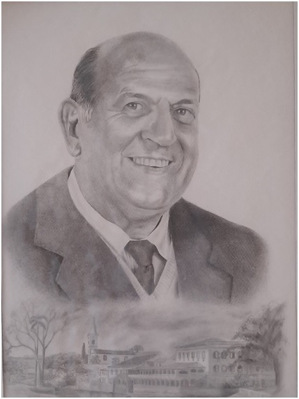
Nasceu em Morretes no dia 30 de janeiro de 1928. Filho de Antônio Cavagnolli e Mercedes de Bona Cavagnolli. Casou-se com a senhorita Zilda Gomes com a qual teve três filhos. Antônio, Stela Maris e Sebastião.Foi fundador do Orfanato Santo Antônio, do Ginásio Municipal Rocha Pombo, do Colégio Comercial Antônio José Gonçalves Filho, da Escola Normal Colegial Silveira Neto, da Escola Profissional Ivone Pimentel, do Rotary Clube de Morretes e da Nova Banda de Música.
Legalizou o patrimônio do Cruzeiro Sport Club em 1973, contido numa área de 28.734m², onde construiu a sede Social.
Como vereador iluminou as praças e conseguiu junto ao Presidente da República a dragagem dos rios e patrulha mecanizadas para a lavoura.
Foi Prefeito Municipal de 1989 a 1992, realizando um grande sonho de sua vida, pois ele amava demais esta terra e queria fazer o melhor por ela.
Transformou nossa cidade num verdadeiro jardim. Dotado de nobre coração, ajudava a todos que o procuravam.
Construiu escolas, coretos, pontes e praças. Deixou marcas positivas, com carinhosas lembranças.
Católico fervoroso, muito ajudou a nossa igreja. Era grande devoto do Divino espírito Santo e de Nossa Senhora do Porto. Participava da Santa Missa e das Procissões com o seu canto maravilhoso e em prece sempre repetia, "Meu Senhor o meu Deus". Hoje ele descansa em paz ao lado do Senhor Jesus, pois faleceu em 31de janeiro de 1993.
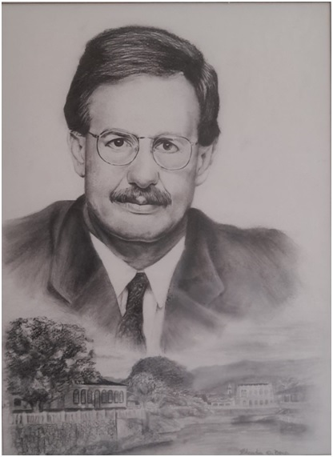
Nasceu em Morretes no dia 16 de novembro de 1948. Filho de Máximo Salomão Neto e Orbela Silvério Salomão.Fez o curso primário na Escola Miguel Schleder, concluiu o 2° grau e o superior em Curitiba.
Desde muito jovem demonstrou amor ao próximo. Visitava todos os domingos o leprosário, levando não só alimentos, mas também palavra de animo e conforto a todos.
Em 1992, foi eleito prefeito de Morretes, cargo que exerceu de 1993 a 1996.
Neste período procurou fazer o melhor por Morretes, principalmente pela população mais carente.
Empresário, analista econômico muito bem sucedido, reside em Curitiba com seus familiares.
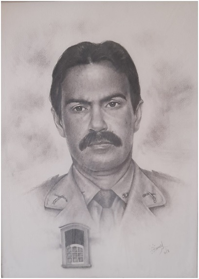
Sergio Luiz Malucelli, filho de Orlando Malucelli e Zulmira de Souza Malucelli, casado com Maria Stella ConsentinoMalucelli, com quem teve dois filhos, Alexandre ConsentinoMalucelli e Ellen Maria ConsentinoMalucelli, nasceu em Morretes em 08 de junho de 1951, onde iniciou seus estudos no Grupo Escolar Miguel Schleder e concluiu a antiga 4ª série no Ginásio Estadual Rocha Pombo.Em 1967, prestou concurso para a escola de formação de oficiais, hoje Academia de Policia Militar do Guatupê, ao final do curso foi declarado Aspirante a Oficial da Policia Militar do Estado do Paraná.
Realizou todos os cursos exigidos pela Corporação fazendo estágio inclusive no FBI/Virginia (EUA) além da formação em História, Administração em Empresas e Direito, que em muito contribuíram para a sua carreira.
Iniciou a carreira de Oficial da Policia Militar, sendo promovido a todos os postos por merecimento, alcançando o posto de Coronel. Em 10 de junho de 1996, foi nomeado pelo Governador do Estado, através de Decreto nº 1960, e homologado pela Assembleia Legislativa do Paraná, interventor Estadual a prefeitura Municipal de Morretes, permanecendo no cargo durante seis meses.
Morreteano por excelência, Sergio Malucelli, sempre agradeceu os primeiros ensinamentos que recebeuna cidade de Morretes, onde guarda com muita lembrança os nomes das professoras Iracema Bittencourt e Polônia Kopczwnski.
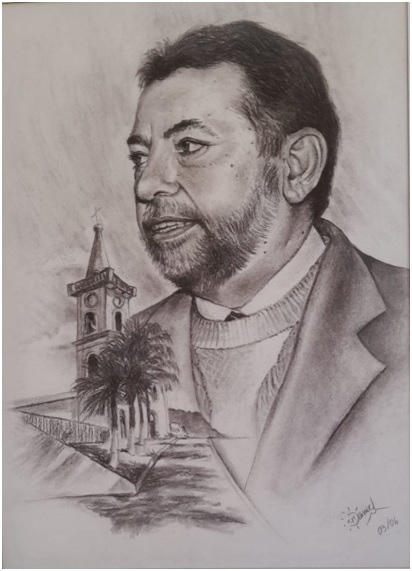
Nasceu em Lavras da Mangabeira, no estado do Ceará, no dia 1° de outubro de 1945, filho de João Ferreira da Silva e Diva Teófilo dos Santos.Sente imenso orgulho de ter dupla cidadania, cearense e paranaense.
Professor licenciado em técnicas agrícolas, pela Faculdade de Educação do estado da Bahia.
Foi vereador da Câmara Municipal de Morretes em 1997 até o ano de 2000, e presidente da mesa executiva da Câmara Municipal no biênio 1999/2000.
Possui relevante experiência profissional.
Eleito prefeito no ano de 2000 assumiu o cargo executivo de 2001 a 2004, ano em que foi reeleito para o período de 2005 a 2008. Foi reeleito ainda mais uma vez no período de 2012 a 2016.